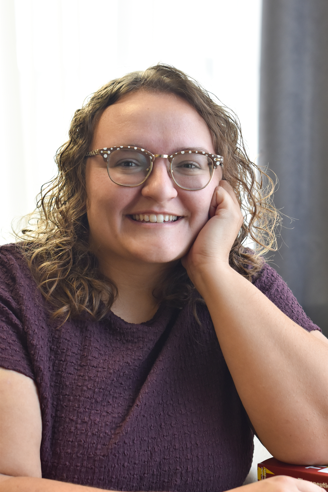

Carly Johnson
MSW Practicum Student | Cedar City Counseling Center
Carly is currently pursuing her master’s degree in social work at the University of Utah. She earned bachelor’s degrees in psychology and criminal justice from Southern Utah University and has spent the past eight years working with adolescents at Southwest Utah Youth Center in juvenile corrections. She continues to work with adolescents in schools and teaches evidence-based skills groups, including Advanced Decision Making and Problem Solving for Teens (ADAPT) and Dialectical Behavior Therapy (DBT).
Carly’s dream has been to become a therapist for as long as she can remember. She feels fortunate to be a practicum student at Sunray Family Counseling, where she is fulfilling that dream through training and guidance from experienced therapists. She is driven to learn and apply evidence-based techniques to provide high-quality care and looks forward to empowering her clients with the training and guidance she is receiving.
Outside of living the dream, Carly teases her nieces and nephews, barely stays afloat while kayaking, sings at the top of her lungs at concerts, tries not to talk during plays, and avoids getting eaten by bears while camping. She is most likely doing all of these activities with some form of chocolate in hand.
Back to Our Staff